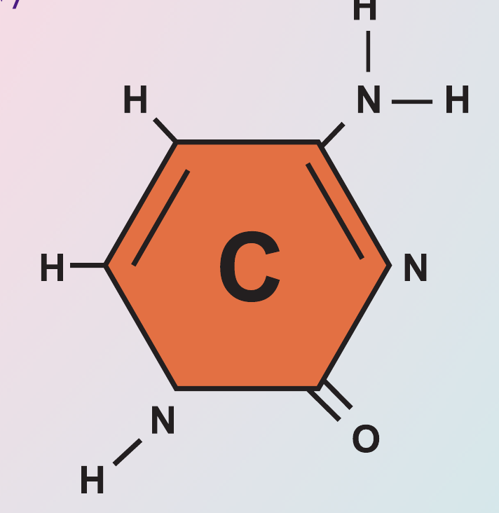

Dẫn xuất của hiđrocacbon

Image source: Topic 1 image sources
| Vietnamese | Dẫn xuất của hiđrocacbon |
|---|---|
| English | Hydrocarbon derivative |
| Pronunciation | /ˌhaɪ.drəʊˌkɑː.bən dɪˈrɪv.ə.tɪv/ |
| Word type | Danh từ (Noun) |
Meaning (Vietnamese)
Dẫn xuất của hiđrocacbon là hợp chất hữu cơ được tạo thành khi một hay nhiều nguyên tử hiđro trong phân tử hiđrocacbon được thay thế bằng nguyên tử hoặc nhóm nguyên tử khác.
Meaning (English)
an organic compound formed when one or more hydrogen atoms in a hydrocarbon are replaced by other atoms or groups of atoms.
Example
Ethanol is a hydrocarbon derivative.
Etanol là một dẫn xuất của hiđrocacbon.
Another definition from the notes
Organic compound formed when hydrogen atoms in a hydrocarbon are replaced by other groups.
Source of information: Topic 1 notes (see Sources)